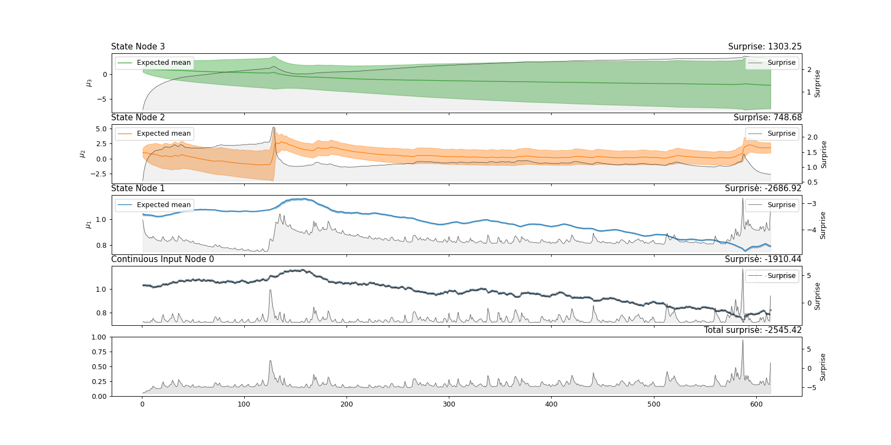

Plot the trajectories of the nodes’ sufficient statistics and surprise.
This function will plot the expected mean and precision (converted into standard
deviation) and the surprise at each level of the node structure.
Parameters:
network
An instance of the main Network class.
ci
Show the uncertainty around the values estimates (standard deviation).
show_surprise
If True plot each node’s surprise together with sufficient statistics.
If False, only the input node’s surprise is depicted.
show_current_state
If True, plot the current mean and precision on the top of expected mean and
precision. Defaults to False.
show_observations
If True, show the observations received from the child node(s). In the
situation of value coupled nodes, plot the mean of the child node(s). This
feature is not supported in the situation of volatility coupling. Defaults to
False.
figsize
The width and height of the figure. Defaults to (18, 9) for a two-level model,
or to (18, 12) for a three-level model.
axs
A list of Matplotlib axes instances where to draw the trajectories. This should
correspond to the number of nodes in the structure. The default is None
(create a new figure).
Returns:
axs
The Matplotlib axes instances where to plot the trajectories.
Examples
Visualization of nodes’ trajectories from a three-level continuous HGF model.
frompyhgfimportload_datafrompyhgf.modelimportHGF# Set up standard 3-level HGF for continuous inputshgf=HGF(n_levels=3,model_type="continuous",initial_mean={"1":1.04,"2":1.0,"3":1.0},initial_precision={"1":1e4,"2":1e1,"3":1e1},tonic_volatility={"1":-13.0,"2":-2.0,"3":-2.0},tonic_drift={"1":0.0,"2":0.0,"3":0.0},volatility_coupling={"1":1.0,"2":1.0},)# Read USD-CHF datatimeserie=load_data("continuous")# Feed inputhgf.input_data(input_data=timeserie)# Plothgf.plot_trajectories();

Visualization of nodes’ trajectories from a three-level binary HGF model.